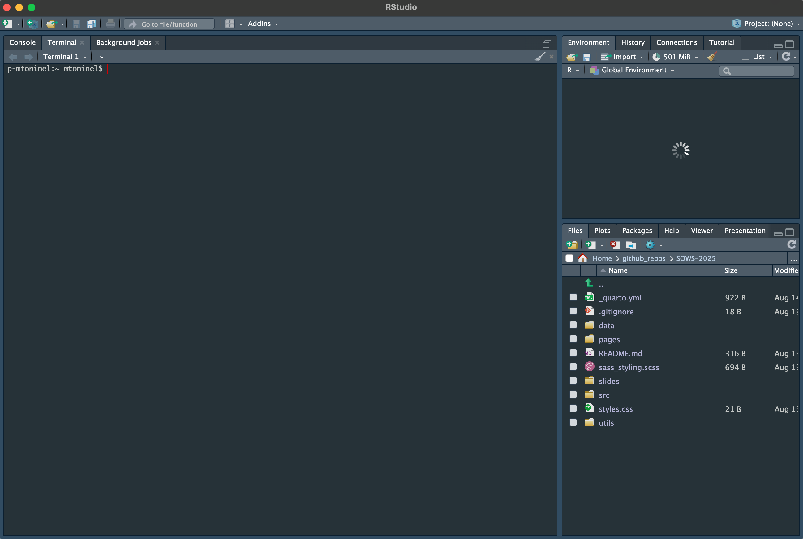

# Install required packages for subsequent analyses
source("./utils/installations.R")Setup
Objectives 🎯
- Setup RStudio
- Get familiar with the interface
- Download relevant packages and set up the computing environment
Setup
Downloading the workshop contents
In order to have everything ready to go through the steps of the workshop, we first need to download the required materials. To do so, click on this link. This should trigger a file download on your system.
Keep track of the location of the download! We will now head into this folder using
Rthrough theRstudiointerface.
Initializing Rstudio
Once RStudio is installed on your computer and opened, you should be able to see something like the following interface:

This is your working interface, the bottom right section shows your current file system. The section on the left currently displays your console, where you can type R code interactively.
Creating a new R project for the workshop
Go ahead and create a new R project by cliking on File > New Project and name it what you want. You can think of a project as a container of everything we will use during our workshop both in terms of files as well as R objects. When you create the project, select the option to create it from an existing folder, and use the folder you just downloaded which should be named sows-2025-master to initialize it. Now, using the navigation menu on the bottom right, you should be able to head to the folder we just downloaded! You should see it contains a set of files including a folder named data.
⚠️ To make sure that everything is working properly, run the following command in your console
getwd()and make sure that the output path that is returned ends withsows-2025-master!
Installing packages
The analyses that we are going to conduct require specific packages. In R, packages are collections of functions which help us perform standardized workflows. In the code chunk below, we instruct R to install the packages that we will need later on throughout the workshop.
💡 Copy and paste this and the other code chunks from here to your R script to follow.
During the installation, you will see many messages being displayed on your R console, don’t pay too much attention to them unless they are red and specify an error!
If you encounter any of these messages during installation, follow this procedure here:
# R asks for package updates, answer "n" and type enter
# Question displayed:
Update all/some/none? [a/s/n]:
# Answer to type:
n
# R asks for installation from binary source, answer "no" and type enter
# Question displayed:
Do you want to install from sources the packages which need compilation? (Yes/no/cancel)
# Answer to type:
noWarm-up: Load the libraries
Once everything is correctly installed, we can load the required libraries that we will use during the workshop. Take this line and paste it in your console:
# Load required packages for subsequent analyses
source("./utils/load_libraries.R")Hopefully all packages were correctly installed and now we can dive a bit deeper into the world of spatial data analysis!